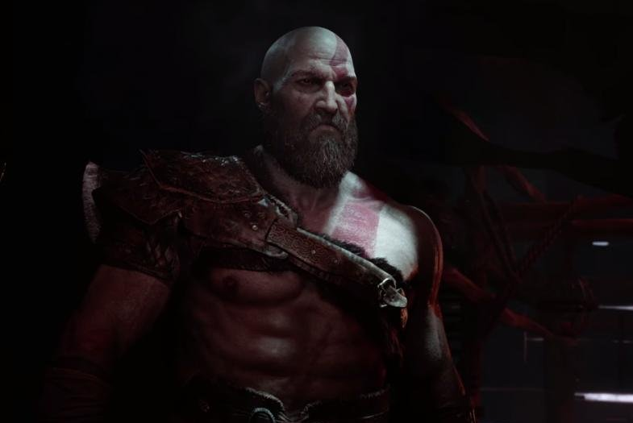

Kratos is the main protagonist of the God of War video game series. He's known for
being a Spartan warrior who becomes the God of War after defeating Ares.
He takes revenge on the gods of Olympus for the death of his family, but later becomes
a father figure to his son, Atreus, in the Norse mythology-based games.
- Despite harboring a deep resentment in the Greek-mythology games, an older and much wiser Kratos learns
to become more compassionate through his son, Atreus.
- Kratos demonstrates incredible skill in combat, making a name for the God of War by being merciless in his battles.
- The design for the characters reflects their origins and story, with Kratos being white from the ashes of his
loved ones and sporting a red tattoo to honor his brother, Deimos.